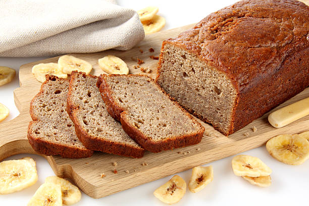

Banana Bread Recipe
Info:
- Prep Time: 15mins
- Cook Time: 1hr
- Total Time: 1h 15mins
- Servings: 10
- Yield: 1 9x5in loaf
Required Ingredients
- 3 ripe, mashed bananas
- 1 cup white sugar
- 1 egg
- 1/4 cup melted butter
- 1 and 1/2 cups all purpose flour
- 1 tsp baking soda
- 1 tsp salt
- 1 tsp baking soda
Steps:
- Preheat the oven to 325F. Grease a 9x5-inch loaf pan.
-
Combine bananas, sugar, egg, and butter together in a bowl.
Mix flour and baking soda together in a separate bowl;
stir into banana mixture until batter is just mixed.
- Stir in salt; pour batter into the prepared loaf pan.
-
Bake in the preheated oven until a toothpick inserted in the center
of the bread comes out clean, about 1 hour.
Congrats! You've just made yourself some banana bread

Navigate Back to Homepage